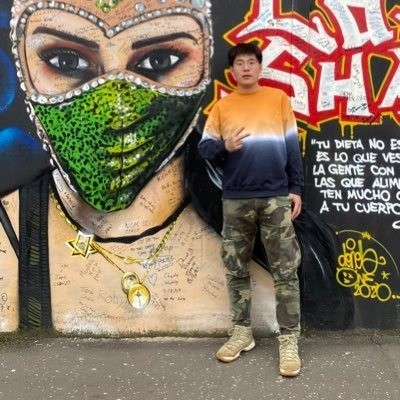

|


Email:
liuxubo717@gmail.com
I am a Research Scientist at Meta Superintelligence Labs (MSL), currently working on building “Her”, with a focus on speech tokenization, full-duplex modelling, and post-training.
Before joining Meta, I was a Research Scientist & Head of Speech at Stability AI, where I led the company's efforts in generative AI for speech.
I obtained my PhD from the University of Surrey, under the supervision of Prof. Wenwu Wang and Prof. Mark D. Plumbley, focusing on the understanding, separation, and generation of audio signals.
|

|
|
My research centres on machine learning for audio, speech, and language. The selected publications below are grouped by topic; click each heading to expand. For the complete and up-to-date list, please see my Google Scholar.
Audio Tokenizer & Codec
-
Scaling Speech Tokenizers with Diffusion Autoencoders
Yuancheng Wang, Zhenyu Tang, Yun Wang, Arthur Hinsvark, Yingru Liu, Yinghao Aaron Li, Kainan Peng, Junyi Ao, Mingbo Ma, Mike Seltzer, Qing He, Xubo Liu
International Conference on Learning Representations (ICLR), 2026
[paper] [demo]
-
Scaling Transformers for Low-Bitrate High-Quality Speech Coding
Julian D Parker*, Anton Smirnov, Jordi Pons, CJ Carr, Zack Zukowski, Zach Evans, Xubo Liu*
International Conference on Learning Representations (ICLR), 2025
[paper] [code] [demo] [model]
-
ALMTokenizer: A Low-bitrate and Semantic-rich Audio Codec Tokenizer for Audio Language Modeling
Dongchao Yang, Songxiang Liu, Haohan Guo, Jiankun Zhao, Yuanyuan Wang, Helin Wang, Zeqian Ju, Xubo Liu, Xueyuan Chen, Xu Tan, Xixin Wu, Helen Meng
Forty-second International Conference on Machine Learning (ICML), 2025
[paper] [demo]
-
Learning Source Disentanglement in Neural Audio Codec
Xiaoyu Bie, Xubo Liu, Gaël Richard
IEEE International Conference on Acoustics, Speech and Signal Processing (ICASSP), 2025
[paper] [code] [demo]
Audio Generation
-
DreamAudio: Customized Text-to-Audio Generation with Diffusion Models
Yi Yuan, Xubo Liu, Haohe Liu, Xiyuan Kang, Zhuo Chen, Yuxuan Wang, Mark D Plumbley, Wenwu Wang
IEEE/ACM Transactions on Audio, Speech, and Language Processing, 2026
[paper] [demo]
-
RiTTA: Modeling Event Relations in Text-to-Audio Generation
Yuhang He, Yash Jain, Xubo Liu, Andrew Markham, Vibhav Vineet
The 2025 Conference on Empirical Methods in Natural Language Processing (EMNLP), 2025
[paper] [code] [demo]
-
Sound-VECaps: Improving Audio Generation With Visual Enhanced Captions
Yi Yuan, Dongya Jia, Xiaobin Zhuang, Yuanzhe Chen, Zhengxi Liu, Zhuo Chen, Yuping Wang, Yuxuan Wang, Xubo Liu, Xiyuan Kang, Mark D Plumbley, Wenwu Wang
IEEE International Conference on Acoustics, Speech and Signal Processing (ICASSP), 2025
-
WavJourney: Compositional Audio Creation with Large Language Models
Xubo Liu, Zhongkai Zhu, Haohe Liu, Yi Yuan, Meng Cui, Qiushi Huang, Jinhua Liang, Yin Cao, Qiuqiang Kong, Mark D Plumbley, Wenwu Wang
IEEE/ACM Transactions on Audio, Speech, and Language Processing, 2025
-
AudioLDM 2: Learning Holistic Audio Generation with Self-supervised Pretraining
Haohe Liu, Yi Yuan, Xubo Liu, Xinhao Mei, Qiuqiang Kong, Qiao Tian, Yuping Wang, Wenwu Wang, Yuxuan Wang, Mark D Plumbley
IEEE/ACM Transactions on Audio, Speech, and Language Processing, 2024
-
Retrieval-Augmented Text-to-Audio Generation
Yi Yuan, Haohe Liu, Xubo Liu, Qiushi Huang, Mark D Plumbley, Wenwu Wang
IEEE International Conference on Acoustics, Speech and Signal Processing (ICASSP), 2024
-
ComposerX: Multi-Agent Symbolic Music Composition with LLMs
Qixin Deng, Qikai Yang, Ruibin Yuan, Yipeng Huang, Yi Wang, Xubo Liu, Zeyue Tian, Jiahao Pan, Ge Zhang, Hanfeng Lin, Yizhi Li, Yinghao Ma, Jie Fu, Chenghua Lin, Emmanouil Benetos, Wenwu Wang, Guangyu Xia, Wei Xue, Yike Guo
International Society for Music Information Retrieval (ISMIR), 2024
-
WavCraft: Audio Editing and Generation with Natural Language Prompts
Jinhua Liang, Huan Zhang, Haohe Liu, Yin Cao, Qiuqiang Kong, Xubo Liu, Wenwu Wang, Mark D Plumbley, Huy Phan, Emmanouil Benetos
ICLR 2024 Workshop on Large Language Model (LLM) Agents, 2024
-
AudioLDM: Text-to-Audio Generation with Latent Diffusion Models
Haohe Liu, Zehua Chen, Yi Yuan, Xinhao Mei, Xubo Liu, Danilo Mandic, Wenwu Wang, Mark D Plumbley
Proceedings of the 40th International Conference on Machine Learning (ICML), 2023
-
Conditional Sound Generation Using Neural Discrete Time-Frequency Representation Learning
Xubo Liu, Turab Iqbal, Jinzheng Zhao, Qiushi Huang, Mark D Plumbley, Wenwu Wang
IEEE 31st International Workshop on Machine Learning for Signal Processing (MLSP), 2021
Audio Source Separation
-
TMS: Text-Prompted Multi-channel Speech Separation on Smart Glasses
Yang Liu, Li Wan, Yiteng Huang, Yifeng Fan, Haohe Liu, Xinhao Mei, Xubo Liu, Ming Sun, Yangyang Shi, Saurabh Adya, Florian Metze, Ariya Rastrow
IEEE International Conference on Acoustics, Speech and Signal Processing (ICASSP), 2026
-
FlowSep: Language-Queried Sound Separation with Rectified Flow Matching
Yi Yuan, Xubo Liu, Haohe Liu, Mark D Plumbley, Wenwu Wang
IEEE International Conference on Acoustics, Speech and Signal Processing (ICASSP), 2025
-
Separate Anything You Describe
Xubo Liu, Qiuqiang Kong, Yan Zhao, Haohe Liu, Yi Yuan, Yuzhuo Liu, Rui Xia, Yuxuan Wang, Mark D Plumbley, Wenwu Wang
IEEE/ACM Transactions on Audio, Speech, and Language Processing, 2024
-
A Reference-free Metric for Language-Queried Audio Source Separation using Contrastive Language-Audio Pretraining
Feiyang Xiao, Jian Guan, Qiaoxi Zhu, Xubo Liu, Wenbo Wang, Shuhan Qi, Kejia Zhang, Jianyuan Sun, Wenwu Wang
Workshop on Detection and Classification of Acoustic Scenes and Events (DCASE), 2024
-
Audio Prompt Tuning for Universal Sound Separation
Yuzhuo Liu, Xubo Liu, Yan Zhao, Yuanyuan Wang, Rui Xia, Pingchuan Tain, Yuxuan Wang
IEEE International Conference on Acoustics, Speech and Signal Processing (ICASSP), 2024
-
Universal Sound Separation with Self-Supervised Audio Masked Autoencoder
Junqi Zhao, Xubo Liu, Jinzheng Zhao, Yi Yuan, Qiuqiang Kong, Mark D Plumbley, Wenwu Wang
European Signal Processing Conference (EUSIPCO), 2024
-
Separate What You Describe: Language-Queried Audio Source Separation
Xubo Liu, Haohe Liu, Qiuqiang Kong, Xinhao Mei, Jinzheng Zhao, Qiushi Huang, Mark D Plumbley, Wenwu Wang
INTERSPEECH, 2022
Voice Quality Enhancement
-
VoiceFixer: A Unified Framework for High-Fidelity Speech Restoration
Haohe Liu*, Xubo Liu*, Qiuqiang Kong, Qiao Tian, Yan Zhao, DeLiang Wang
INTERSPEECH, 2022
-
Neural Vocoder is All You Need for Speech Super-resolution
Haohe Liu, Woosung Choi, Xubo Liu, Qiuqiang Kong, Qiao Tian, DeLiang Wang
INTERSPEECH, 2022
Audio Captioning
-
Towards Generating Diverse Audio Captions via Adversarial Training
Xinhao Mei, Xubo Liu, Jianyuan Sun, Mark D Plumbley, Wenwu Wang
IEEE/ACM Transactions on Audio, Speech, and Language Processing, 2024
-
Visually-Aware Audio Captioning with Adaptive Audio-Visual Attention
Xubo Liu, Qiushi Huang, Xinhao Mei, Haohe Liu, Qiuqiang Kong, Jianyuan Sun, Shengchen Li, Tom Ko, Yu Zhang, Lilian H Tang, Mark D Plumbley, Volkan Kılıç, Wenwu Wang
INTERSPEECH, 2023
-
Knowledge Distillation for Efficient Audio-Visual Video Captioning
Özkan Çaylı, Xubo Liu, Volkan Kılıç, Wenwu Wang
European Signal Processing Conference (EUSIPCO), 2023
-
Dual Transformer Decoder based Features Fusion Network for Automated Audio Captioning
Jianyuan Sun, Xubo Liu, Xinhao Mei, Volkan Kılıç, Mark D Plumbley, Wenwu Wang
INTERSPEECH, 2023
-
Automated Audio Captioning: An Overview of Recent Progress and New Challenges
Xinhao Mei, Xubo Liu, Mark D Plumbley, Wenwu Wang
EURASIP Journal on Audio, Speech, and Music Processing, 2022
-
Diverse Audio Captioning via Adversarial Training
Xinhao Mei, Xubo Liu, Jianyuan Sun, Mark D Plumbley, Wenwu Wang
IEEE International Conference on Acoustics, Speech and Signal Processing (ICASSP), 2022
-
Leveraging Pre-trained BERT for Audio Captioning
Xubo Liu, Xinhao Mei, Qiushi Huang, Jianyuan Sun, Jinzheng Zhao, Haohe Liu, Mark D Plumbley, Volkan Kılıç, Wenwu Wang
European Signal Processing Conference (EUSIPCO), 2022
-
An Encoder-Decoder Based Audio Captioning System With Transfer and Reinforcement Learning
Xinhao Mei, Qiushi Huang, Xubo Liu, Gengyun Chen, Jingqian Wu, Yusong Wu, Jinzheng Zhao, Shengchen Li, Tom Ko, H Lilian Tang, Xi Shao, Mark D Plumbley, Wenwu Wang
Proceedings of the Detection and Classification of Acoustic Scenes and Events (DCASE), 2021
-
CL4AC: A Contrastive Loss for Audio Captioning
Xubo Liu, Qiushi Huang, Xinhao Mei, Tom Ko, H Lilian Tang, Mark D Plumbley, Wenwu Wang
Proceedings of the Detection and Classification of Acoustic Scenes and Events (DCASE), 2021
-
Audio Captioning Transformer
Xinhao Mei, Xubo Liu, Qiushi Huang, Mark D Plumbley, Wenwu Wang
Proceedings of the Detection and Classification of Acoustic Scenes and Events (DCASE), 2021
Audio Classification
-
PolyBench: A Benchmark for Compositional Reasoning in Polyphonic Audio
Yuanjian Chen, Yang Xiao, Han Yin, Xubo Liu, Jinjie Huang, Ting Dang
INTERSPEECH, 2026
[paper] [code] [dataset]
-
Noise-Robust Sound Event Detection and Counting via Language-Queried Sound Separation
Yuanjian Chen, Yang Xiao, Han Yin, Yadong Guan, Xubo Liu
IEEE Signal Processing Letters, 2025
-
Acoustic Prompt Tuning: Empowering Large Language Models with Audition Capabilities
Jinhua Liang, Xubo Liu, Wenwu Wang, Mark D Plumbley, Huy Phan, Emmanouil Benetos
IEEE/ACM Transactions on Audio, Speech, and Language Processing, 2025
-
MASV: Speaker Verification with Global and Local Context Mamba
Yang Liu, Li Wan, Yiteng Huang, Ming Sun, Xinhao Mei, Xubo Liu, Yangyang Shi, Florian Metze
INTERSPEECH, 2025
-
Disentangling Hierarchical Features for Anomalous Sound Detection Under Domain Shift
Jian Guan, Jiantong Tian, Qiaoxi Zhu, Feiyang Xiao, Hejing Zhang, Xubo Liu
IEEE International Conference on Acoustics, Speech and Signal Processing (ICASSP), 2025
-
T-CLAP: Temporal-Enhanced Contrastive Language-Audio Pretraining
Yi Yuan, Zhuo Chen, Xubo Liu, Haohe Liu, Xuenan Xu, Dongya Jia, Yuanzhe Chen, Mark D Plumbley, Wenwu Wang
The IEEE International Workshop on Machine Learning for Signal Processing (MLSP), 2024
-
First-Shot Unsupervised Anomalous Sound Detection with Unknown Anomalies Estimated by Metadata-Assisted Audio Generation
Hejing Zhang, Qiaoxi Zhu, Jian Guan, Haohe Liu, Feiyang Xiao, Jiantong Tian, Xinhao Mei, Xubo Liu, Wenwu Wang
IEEE International Conference on Acoustics, Speech and Signal Processing (ICASSP), 2024
-
Learning Temporal Resolution in Spectrogram for Audio Classification
Haohe Liu, Xubo Liu, Qiuqiang Kong, Wenwu Wang, Mark D Plumbley
AAAI Conference on Artificial Intelligence (AAAI), 2024
-
CM-PIE: Cross-modal Perception for Interactive-enhanced Audio-Visual Video Parsing
Yaru Chen, Ruohao Guo, Xubo Liu, Peipei Wu, Guangyao Li, Zhenbo Li, Wenwu Wang
IEEE International Conference on Acoustics, Speech and Signal Processing (ICASSP), 2024
-
Adapting Language-Audio Models as Few-Shot Audio Learners
Jinhua Liang, Xubo Liu, Haohe Liu, Huy Phan, Emmanouil Benetos, Mark D Plumbley, Wenwu Wang
INTERSPEECH, 2023
-
Ontology-aware Learning and Evaluation for Audio Tagging
Haohe Liu, Qiuqiang Kong, Xubo Liu, Xinhao Mei, Wenwu Wang, Mark D Plumbley
INTERSPEECH, 2023
-
Simple Pooling Front-ends For Efficient Audio Classification
Xubo Liu, Haohe Liu, Qiuqiang Kong, Xinhao Mei, Mark D Plumbley, Wenwu Wang
IEEE International Conference on Acoustics, Speech and Signal Processing (ICASSP), 2023
-
Continual Learning for On-Device Environmental Sound Classification
Yang Xiao*, Xubo Liu*, James King, Arshdeep Singh, Eng Siong Chng, Mark D Plumbley, Wenwu Wang
Proceedings of the Detection and Classification of Acoustic Scenes and Events (DCASE), 2022
-
Segment-level Metric Learning for Few-shot Bioacoustic Event Detection
Haohe Liu, Xubo Liu, Xinhao Mei, Qiuqiang Kong, Wenwu Wang, Mark D Plumbley
Proceedings of the Detection and Classification of Acoustic Scenes and Events (DCASE), 2022
-
Token-Level Supervised Contrastive Learning for Punctuation Restoration
Qiushi Huang, Tom Ko, H Lilian Tang, Xubo Liu, Bo Wu
INTERSPEECH, 2021
Multimodal Speech Recognition
-
Omni-AVSR: Towards Unified Multimodal Speech Recognition with Large Language Models
Umberto Cappellazzo, Xubo Liu, Pingchuan Ma, Stavros Petridis, Maja Pantic
IEEE International Conference on Acoustics, Speech and Signal Processing (ICASSP), 2026
[paper] [code] [demo]
-
MoME: Mixture of Matryoshka Experts for Audio-Visual Speech Recognition
Umberto Cappellazzo, Minsu Kim, Pingchuan Ma, Honglie Chen, Xubo Liu, Stavros Petridis, Maja Pantic
The Thirty-Ninth Annual Conference on Neural Information Processing Systems (NeurIPS), 2025
[paper]
-
SynthVSR: Scaling Up Visual Speech Recognition with Synthetic Supervision
Xubo Liu, Egor Lakomkin, Konstantinos Vougioukas, Pingchuan Ma, Honglie Chen, Ruiming Xie, Morrie Doulaty, Niko Moritz, Jachym Kolar, Stavros Petridis, Maja Pantic, Christian Fuegen
IEEE/CVF Conference on Computer Vision and Pattern Recognition (CVPR), 2023
[paper] [demo]
Personalized Dialogue Generation
-
Selective Prompting Tuning for Personalized Conversations with LLMs
Qiushi Huang, Xubo Liu, Tom Ko, Bo Wu, Wenwu Wang, Yu Zhang, Lilian Tang
The 62nd Annual Meeting of the Association for Computational Linguistics (ACL), 2024
[paper] [code]
-
Learning Retrieval Augmentation for Personalized Dialogue Generation
Qiushi Huang, Shuai Fu, Xubo Liu, Wenwu Wang, Tom Ko, Yu Zhang, Lilian Tang
The 2023 Conference on Empirical Methods in Natural Language Processing (EMNLP), 2023
[paper] [code]
-
Personalized Dialogue Generation with Persona-Adaptive Attention
Qiushi Huang, Yu Zhang, Tom Ko, Xubo Liu, Bo Wu, Wenwu Wang, Lilian Tang
AAAI Conference on Artificial Intelligence (AAAI), 2023
[paper] [code]
Speaker Localization & Tracking
-
Visually Assisted Self-supervised Audio Speaker Localization and Tracking
Jinzheng Zhao, Peipei Wu, Shidrokh Goudarzi, Xubo Liu, Jianyuan Sun, Yong Xu, Wenwu Wang
European Signal Processing Conference (EUSIPCO), 2022
[paper]
-
Audio Visual Multi-Speaker Tracking with Improved GCF and PMBM Filter
Jinzheng Zhao, Peipei Wu, Xubo Liu, Shidrokh Goudarzi, Haohe Liu, Yong Xu, Wenwu Wang
INTERSPEECH, 2022
[paper]
-
Audio-visual Tracking of Multiple Speakers via A PMBM Filter
Jinzheng Zhao, Peipei Wu, Xubo Liu, Yong Xu, Lyudmila Mihaylova, Simon Godsill, Wenwu Wang
IEEE International Conference on Acoustics, Speech and Signal Processing (ICASSP), 2022
[paper]
AI for Aquaculture
-
Fish tracking, counting, and behaviour analysis in digital aquaculture: a comprehensive survey
Meng Cui, Xubo Liu, Haohe Liu, Jinzheng Zhao, Daoliang Li, Wenwu Wang
Reviews in Aquaculture, 2025
[paper]
-
Audio-Visual Class-Incremental Learning for Fish Feeding Intensity Assessment in Aquaculture
Meng Cui, Xianghu Yue, Xinyuan Qian, Jinzheng Zhao, Haohe Liu, Xubo Liu, Daoliang Li, Wenwu Wang
arXiv preprint arXiv:2504.15171, 2025
[paper]
-
Multimodal Fish Feeding Intensity Assessment in Aquaculture
Meng Cui, Xubo Liu, Haohe Liu, Zhuangzhuang Du, Tao Chen, Guoping Lian, Daoliang Li, Wenwu Wang
IEEE Transactions on Automation Science and Engineering, 2024
[paper] [demo] [dataset] [model]
-
Fish Feeding Intensity Assessment in Aquaculture: A New Audio Dataset AFFIA3K and A Deep Learning Algorithm
Meng Cui*, Xubo Liu*, Jinzheng Zhao, Jianyuan Sun, Guoping Lian, Tao Chen, Mark D. Plumbley, Daoliang Li, Wenwu Wang
IEEE 32nd International Workshop on Machine Learning for Signal Processing (MLSP), 2022
[paper] [code] [dataset] [model]
* indicates equal contribution.
|
Employment

2025–Present
|
Research Scientist
Meta Superintelligence Labs, London, UK
|

2024–2025
|
Research Scientist & Head of Speech
Stability AI, London, UK
|
|
Professional Services
Area Chair:
Journal Reviewer:
- IEEE/ACM Transactions on Audio, Speech, and Language Processing
- IEEE Signal Processing Letters
- International Journal of Computer Vision
Conference Reviewer:
- ICLR 2025, ICML 2024–2025, CVPR 2024–2025, ICCV 2025, NeurIPS 2025, AAAI 2025, ACL 2025, ICASSP 2023–2025, ASRU 2025, ECCV 2024, INTERSPEECH 2023–2024, DCASE 2024, EMNLP 2023, MLSP 2023
Special Session & Challenge Organizer:
|
Mentoring
Research Interns at Meta:
Research Interns at Stability AI:
|
Invited Talks and Guest Lectures
|
|